Blog ·
Protesty v Paríži: porovnal som Grok, Gemini a Claude
Na X vidím horiace autá a radnicu, z ktorej padá veža. V správach skoro nič. Grokovi, Gemini aj Claudovi som dal rovnakú otázku a každé ich tvrdenie som overil. Jeden vedel najviac, jeden bol najpresnejší a dokonalý nebol ani jeden.
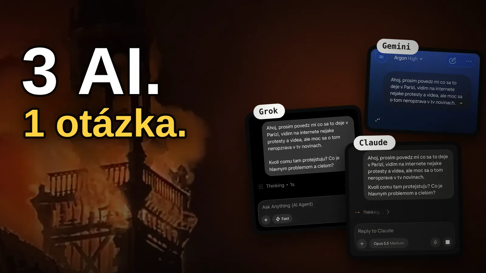
Pondelok ráno. Na X mi lieta jedno video za druhým: horiace autá v Paríži, policajné dodávky v dyme, radnica, z ktorej padá veža. V správach v telke som o tom skoro nič nevidel. Tak som sa spýtal AI.
Rovnakú otázku som dal trom: Grok (zadarmo, režim Fast), Gemini (Argon 4, režim High) a Claude (Opus 5.5, Medium). Potom som každé ich tvrdenie porovnal s tým, čo napísali AP, AFP, Al Jazeera, Euronews a ďalšie médiá.
„Čo sa to deje v Paríži? Vidím na internete nejaké protesty a videá, ale moc sa o tom nerozpráva v TV novinách. Kvôli čomu tam protestujú? Čo je hlavným problémom a cieľom?“
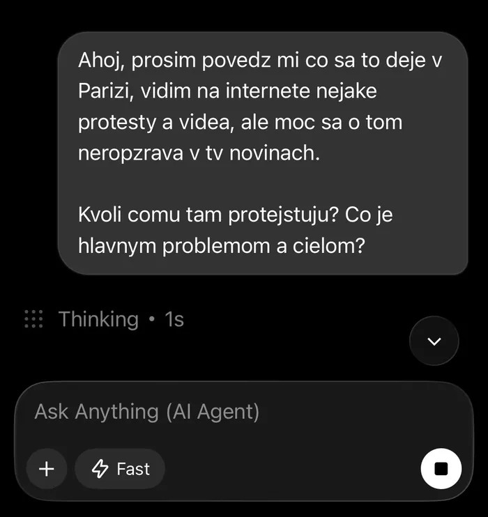
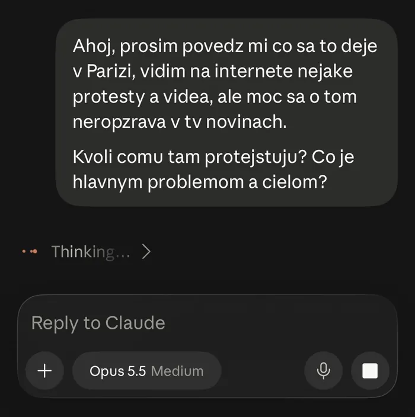
Férovo hneď na začiatku: pri overovaní mi pomáhal Claude, teda jeden z troch, ktoré tu hodnotím. Preto som nič nebral na slovo. Každé tvrdenie som dohľadal v článkoch médií a všetky zdroje sú dole. Ak nájdeš chybu, napíš mi.
Najprv: čo sa naozaj stalo
Toto je verzia, ktorú potvrdzujú viaceré médiá. Proti nej som potom meral všetky tri AI.
- 550 000ľudí v uliciach podľa ministerstva. Odbory hovoria o 800 000
- 1 800+zatknutých v sobotu. V nedeľu ministerstvo hlásilo takmer 2 400
- 500+zranených policajtov, žandárov a hasičov za jeden deň
- 1 mŕtvyinfarkt počas protestu v Paríži. Polícia viac nepovedala
- Začalo sa to v septembri v škole. Stredoškoláci v Créteil pri Paríži začali blokovať školy. Sťažovali sa na triedy s 32 až 36 žiakmi, chýbajúcich učiteľov, rozpadnuté budovy a v lete až 40 °C v triedach. Blokády sa rozšírili po celom Francúzsku.
- Vláda dala len náplasť. 8. októbra minister školstva sľúbil 3 000 zastupujúcich učiteľov. Odbory to nazvali riešením na poslednú chvíľu.
- 17. októbra sa pridali ďalší. Bývalé „žlté vesty“, odbory CGT, vysokoškoláci, klimatickí aktivisti aj farmári. Hlavná téma sa posunula na drahotu: nájmy, potraviny, palivá. Ceny palív v Európe rastú od februára, keď vojna s Iránom zavrela Hormuzský prieliv.
- Väčšina pochodov bola pokojná. Maskované skupiny ale podpálili radnicu v Limoges, ktorá stála od roku 1883. V Marseille vnikli do radnice, v Lyone horela turistická kancelária a v Paríži okolo Place de la République vykradli obchody.
- Zranení sú aj medzi demonštrantmi. V Saint-Étienne prišiel 17-ročný chlapec o pravú ruku po výbuchu policajného granátu. V Mulhouse prišlo 17-ročné dievča o oko. Oba prípady vyšetruje prokuratúra.
- V nedeľu večer prehovoril Macron. Násilie pripísal „povstaleckým živlom“ z krajnej ľavice a sľúbil, že výtržníci zaplatia škody. Do konca jeho mandátu ostáva necelý rok.
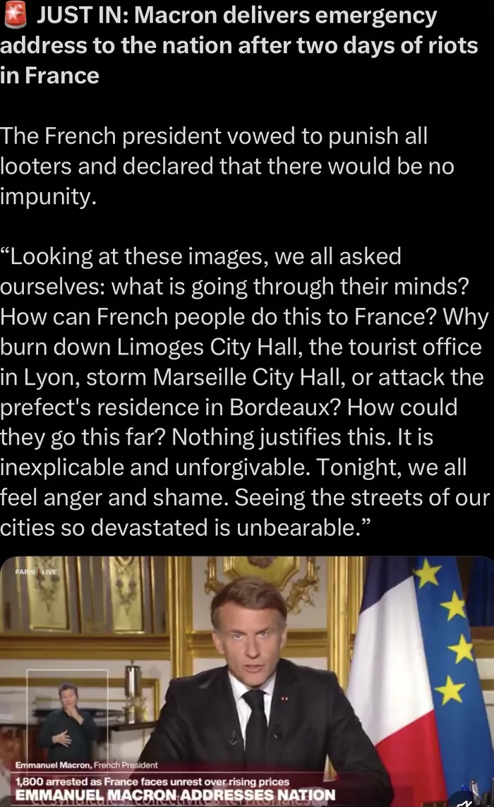
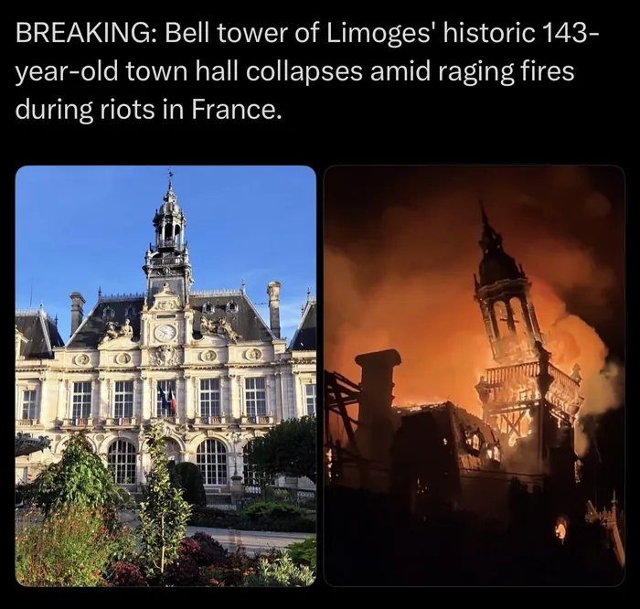
Ako dopadli
Z odpovedí som vybral 10 kľúčových faktov a pozrel sa, kto ich spomenul. Polovičný bod dostal ten, kto fakt spomenul, ale skreslene. Potom som spočítal tvrdenia, ktoré boli zlé alebo som ich v žiadnom zdroji nenašiel.
| Fakt | Grok | Gemini | Claude |
|---|---|---|---|
| Školy, september | áno | áno | áno |
| Drahota, palivá | áno | áno + Hormuz | áno |
| Počet ľudí | áno | áno | áno |
| Zatknutí | áno | áno | nie |
| Radnica Limoges | áno | áno | nie |
| Zranení policajti | áno | nie | áno |
| Zranení demonštranti | nie | nie | áno |
| Úmrtie | skreslene | nie | nie |
| Macronov prejav | len že „mal byť“ | áno | nie |
| 3 000 učiteľov | nie | áno | nie |
| Zdroje | žiadne | žiadne | 5 odkazov |
Grok: rýchly a skoro všetko sedí
Dal najlepší rýchly prehľad: čísla, zatknutých, Limoges aj zranených policajtov. Ale:
- Napísal, že zomrel demonštrant. Polícia hovorí len o „osobe“ s infarktom, bez ďalších detailov.
- Cituje organizátorov, že ide o „posledný pokus“. Tento citát som nikde nenašiel.
- O Macronovom prejave napísal len to, že „mal byť“. Čo v ňom zaznelo, už nepovedal, hoci v tom čase bol dávno za nami.
- Na koniec prikývol mojej otázke, že v správach je to „menej viditeľné“. Pritom o tom písali všetky veľké svetové médiá.
Gemini: najviac informácií, aj tých neoverených
Najbohatšia odpoveď. Ako jediný spomenul Hormuzský prieliv, rozpočet na rok 2027, systém prijímačiek Parcoursup aj 3 000 učiteľov. Všetko to sedí. Lenže medzi tým je päť vecí, ktoré sú zlé alebo som ich nenašiel:
- Píše, že v Marseille zničili radnicu. Do radnice vnikli, zničená bola tá v Limoges.
- Vláda vraj zrušila zvýšenie školného na univerzitách. Nenašiel som.
- K protestom sa vraj pridali taxikári. Nenašiel som.
- Barikády na Boulevard Magenta. Nenašiel som.
- Potkany, chýbajúce lavice a „dve tretiny škôl“ bez učiteľov. Nenašiel som. Overiť sa dali len horúčavy a chýbajúca klimatizácia.
„Nenašiel som“ neznamená automaticky „vymyslel si“. Ale presne takéto drobné detaily (meno ulice, presný podiel) znejú najdôveryhodnejšie a najťažšie sa overujú.
Claude: najpresnejší, ale vynechal najväčšiu správu
Nenašiel som u neho nič nepravdivé. Ako jediný pridal zdroje a ako jediný spomenul aj druhú stranu: chlapca zo Saint-Étienne a kritiku polície. Čísla (550 000, 110 000 v Paríži, 937 zranených policajtov od začiatku protestov) sedia presne. Ale:
- Vôbec nespomenul radnicu v Limoges, teda presne tú vec, ktorú som videl na X najviac.
- Nepovedal, koľko ľudí zatkli, ani nič o Macronovom prejave a úmrtí.
- Veta, že „časť davu otvorene volá po odstúpení Macrona“, má len slabý zdroj.
Skryl niekto niečo naschval?
Úmysel dokázať neviem. Ale vzorce vidno:
- Grok aj Gemini písali o násilí len zo strany demonštrantov a „ultraľavice“. Zranených tínedžerov a 36 vyšetrovaní polície nespomenul ani jeden.
- Claude zase vynechal najväčší obraz víkendu a počet zatknutých.
- Ani jeden mi nepovedal, že sa mýlim v otázke. Protesty riešia AP, AFP, CNN, Al Jazeera, Euronews aj France 24 už od septembra. To, že to nevidím v našich TV správach, neznamená, že o tom svet mlčí.
Skôr to vyzerá tak, že si každý z hromady správ vybral iné kúsky. A práve preto sa oplatí spýtať aspoň dvoch.
A tie videá z X?
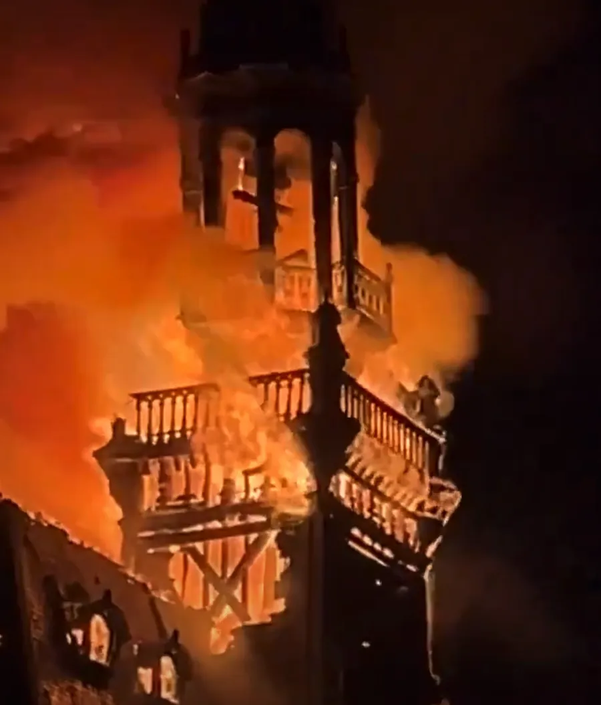
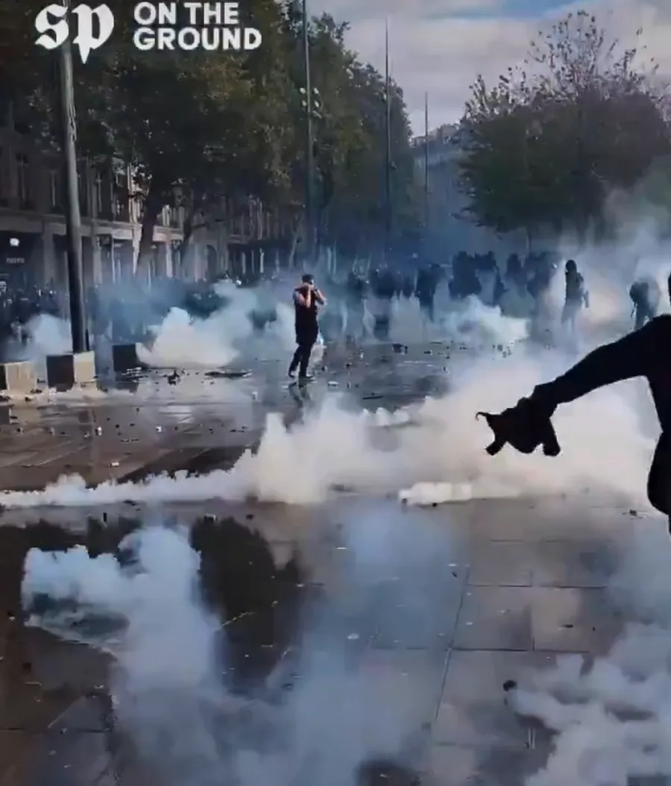
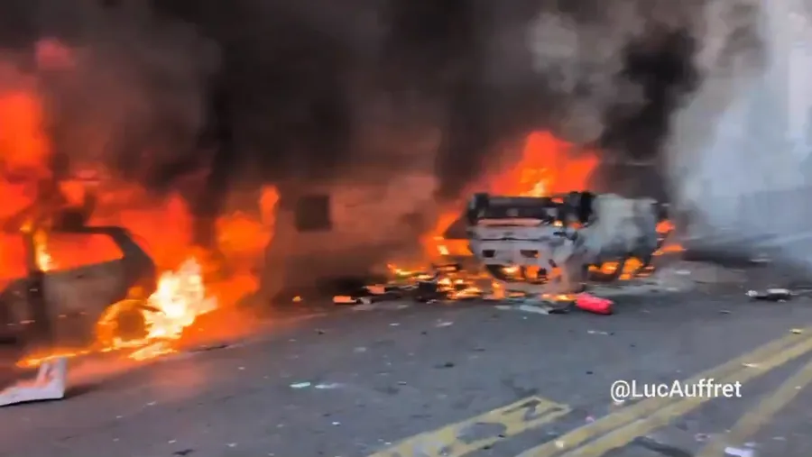
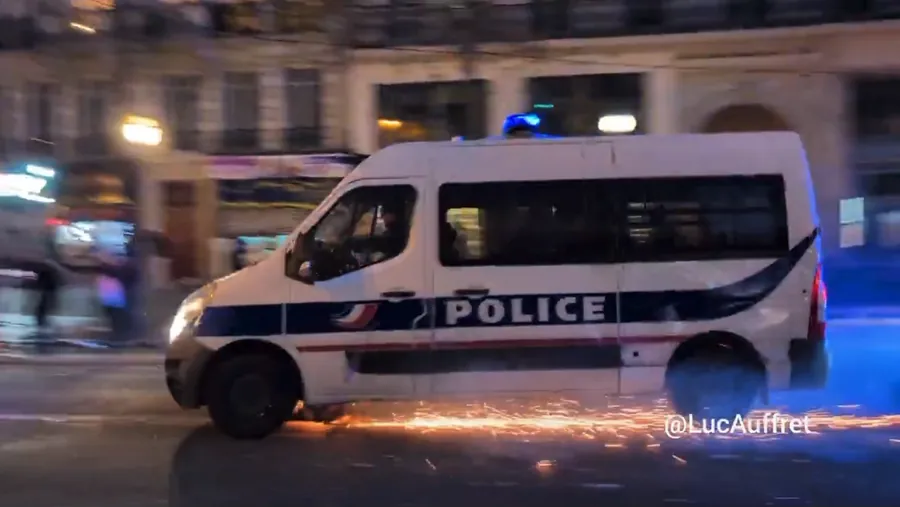
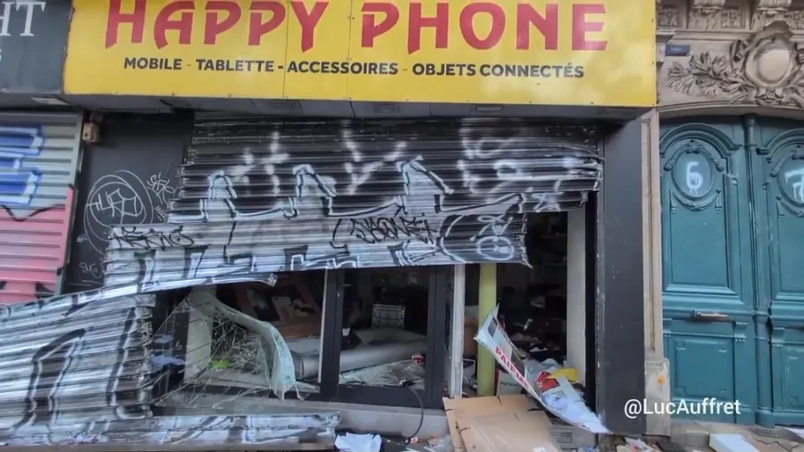
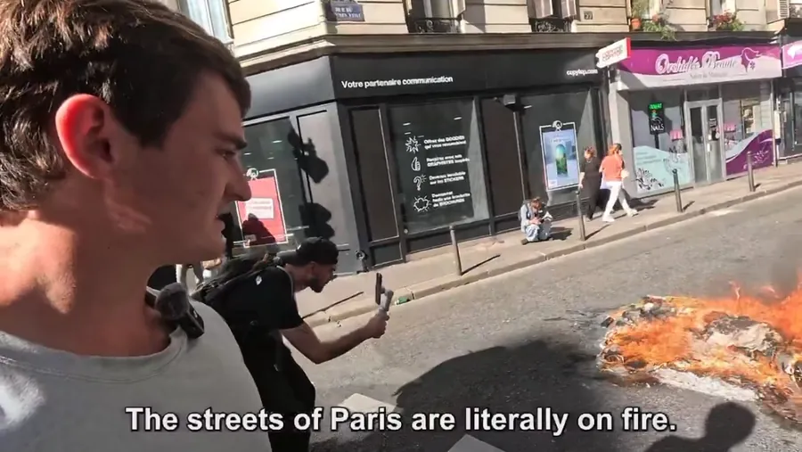
Zábery z Limoges a z Place de la République sedia s tým, čo potvrdili médiá. Ale pozor na to, odkiaľ ich máš. Väčšinu som videl cez účty, ktoré len preposielajú cudzie videá s popiskami ako „Poof gone“. Pôvodný autor je často len vodoznak v rohu. A keď som scrolloval, feed mi medzi Paríž vložil aj úplne nesúvisiace video z lietadla.
Video ti ukáže, čo sa stalo na jednom rohu ulice. Nepovie ti prečo, ani koľko toho bolo.
Verdikt
- Claudenajpresnejší a so zdrojmi. Ale vynechal Limoges a zatknutých
- Gemininajviac informácií a kontextu. Aj najviac vecí, ktoré treba overiť
- Grokdobrý rýchly prehľad, bez zdrojov a s jedným nadsadeným detailom
Bonus: video, ktoré z toho spravil Fable 5.1
Keď bol článok hotový, skúsil som ešte jednu vec. Dal som Fable 5.1 (nový model od Anthropicu) tento článok, MP3 s trackom Right Here, Right Now vo Friction remixe, päť nahrávok obrazovky z X a tri prompty: sprav z toho video, porovnanie nech sedí na druhom drope, a potom jednu vetu so spätnou väzbou (viac záberov, rýchlejšie pečiatky).
Prvá verzia bola hotová asi za pol hodinu. Sám si zanalyzoval track (174 BPM, kde je buildup, kde drop), nastrihol hudbu na takty, upravil zábery, nakreslil mapu a animácie a každú pečiatku položil na dobu. Hlas tam nie je, lebo hlas si vyrobiť nevie. Je to ukážka, nie hotová vec. Ale je celkom sranda vidieť, čo z troch promptov a jedného MP3 vznikne.
Video je len ukážka na tomto webe. Hudba a zábery nie sú moje, autori záberov sú uvedení na záverečnej karte.
Čo si z toho beriem
- Pýtaj si zdroje. Ak AI nedá odkazy, napíš jej „daj mi zdroje“. Bez nich nevieš nič overiť.
- Spýtaj sa aspoň dvoch. Kde sa zhodujú, väčšinou to sedí. Kde nie, tam over.
- Viac detailov neznamená viac pravdy. Meno ulice alebo presné percento znie dôveryhodne, aj keď nie je.
- Nevkladaj do otázky svoj názor. Keď napíšeš „médiá o tom mlčia“, AI ti to rada potvrdí.
- Video z X ber ako jeden záber, nie ako celý príbeh.
Je to jedna otázka v jeden deň, v rôznych režimoch. Nie je to veľký test. Ale na to, aby som videl, ako veľmi sa môžu tri AI líšiť pri tej istej správe, to stačilo.
Chceš si niečo také vyskúšať sám? Na 3-hodinovej session ťa to naučím na tvojich vlastných veciach.
15 min hovor zadarmo